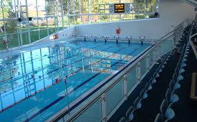
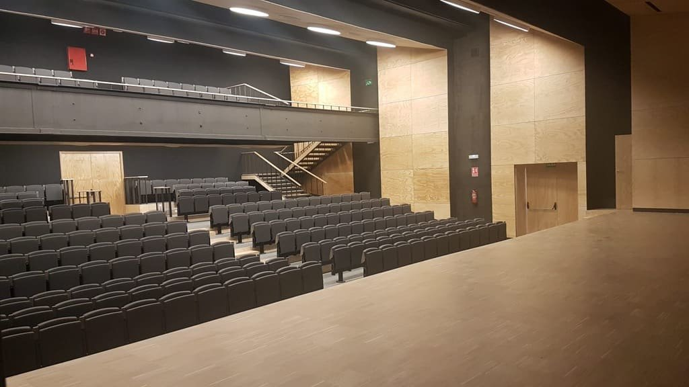
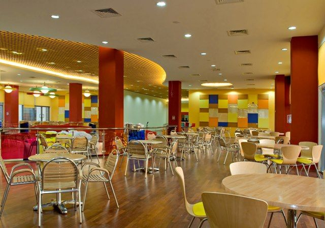
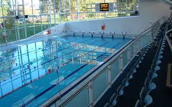
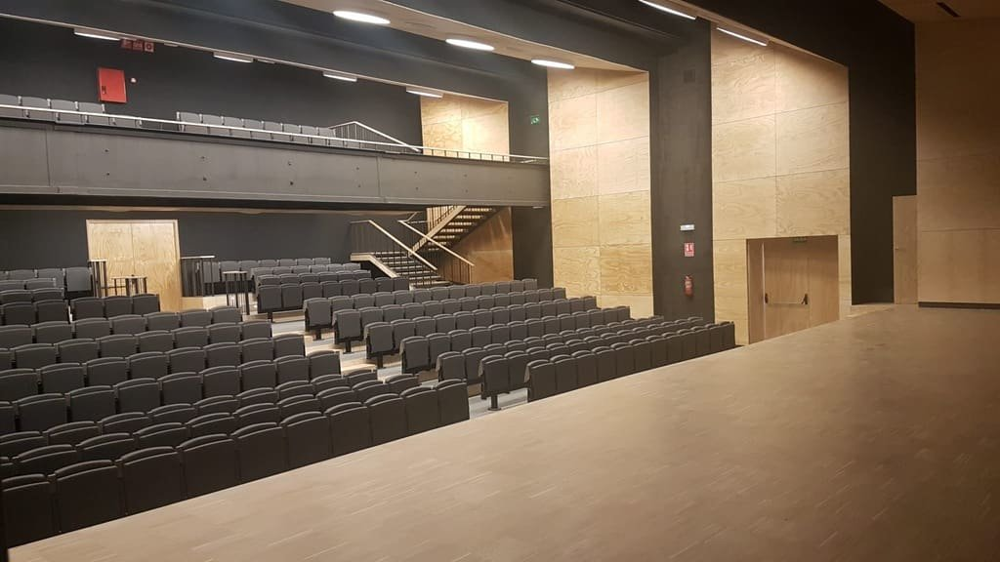
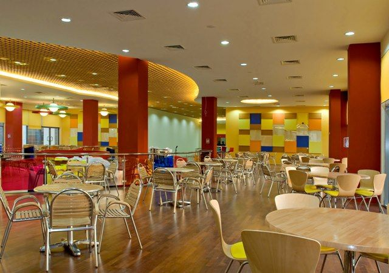

| Home | About us | Academic | Admission | Facilities | Security Measures | School Stories | Contact Us |
Computer Labs
Science Labs
Modern Teaching Facilities
Health Room
Library Facilities
Conference Hall
Art Room
Aesthetic Learning - Western Music, Eastern Music and Kandyan Dancing
Play Area and Grounds Fcailities
Hall Facilities
Book Shop
Safe Drinking Water Dispensers
Canteen and Dining Area
Councelling and learning Support System
We have three fully - air conditioned computer labs for the junior, middle school and senior students featuring modern technology that includes a computer network, internet access and multimedia facilities. The parents also have online access to our IMS (Information Management System) to observe their child's progress.
Our four science lacorataries for Physics, Biology, Chemistry and general use are fully-equipped and continuously upgraded with modern addictions. The laboratories are maintained according to interntional standards to provide practical experiences, experiments and educational demonstrations for students, under supervision.
sWisdom Academy aims to make the learning process more engaging by using facilities such as Smart Boards, TVs and other forms of digital media.
Experienced and qualified nursing staff are in charge of the health room, which is well-equipped with medical supplies for a school. Common medical issues that can occur in a school environment are well-handled by our nursing staff.
With staff and students’ development in mind, our fully-air-conditioned library contains an extensive collection ranging from educational and fictional books to biographies, including marking schemes and past papers. Promoting a positive learning environment, the library also features audio and video / multi-media resources.
Our conference hall can hold a large number of student and is fully-air conditioned with modern audio and video multi-media facilities to ensure a positive learning experience. It is used for screening educational films, conducting insightful programs etc.
The art room is a well-ventilated space for students to develop their artistic and creative skills.
With an emphasis on creating a balanced curriculum for our students, we encourage creative exploration and talent development. The students learn to appreciate art, music and culture through aesthetic learning.
Creating a healthy balance between academics and extra-curricular to ensure well-rounded students are one of our main priorities. The junior and main grounds provide spacious areas for student interaction and playtime, as we believe a school environment should be engaging and positive.
Wisdom Academy, Colombo has two main halls, the J. D. Perera hall and the H. K. Munasinghe hall with the capacity to hold 750 and 500 people in order. The J. D. Perera hall is fully air conditioned and also equipped with a modern seating facility. It is the venue for graduations, prize-giving’s, meetings, programs and more. The H. K. Munasinghe is usually the venue for exhibitions, fairs, meeting etc.
Students or staff can conveniently purchase stationery items from the book shop.
Clean, safe drinking water is available for all students at accessible locations.
The school canteen provides a variety of snacks, meals and healthy drinks and fresh juice. The spacious seating area can accommodate a large number of students.
We aim to create an enriching, positive learning environment for students, therefore counselling facilities are available when necessary. Ensuring all children are included and given quality education, our Learning Support Unit focuses on children who require extra care in a learning environment.
 




